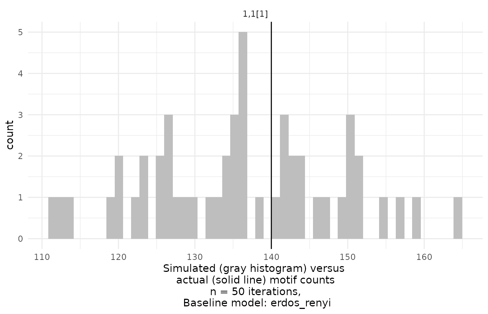
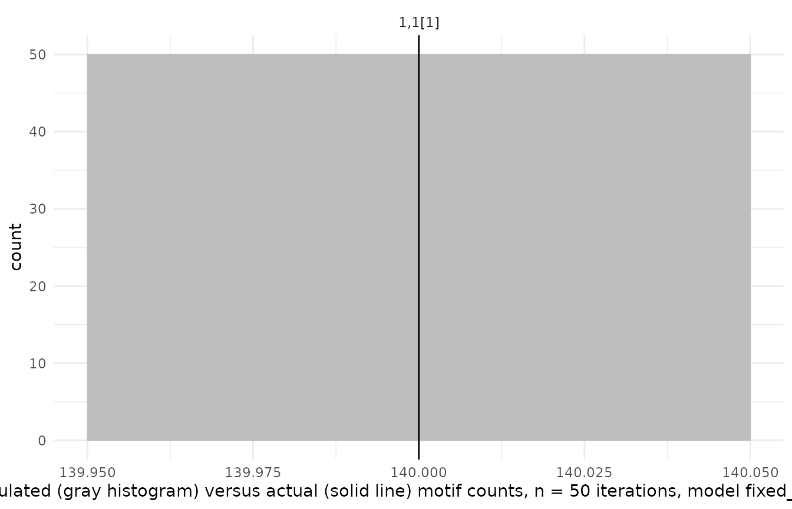
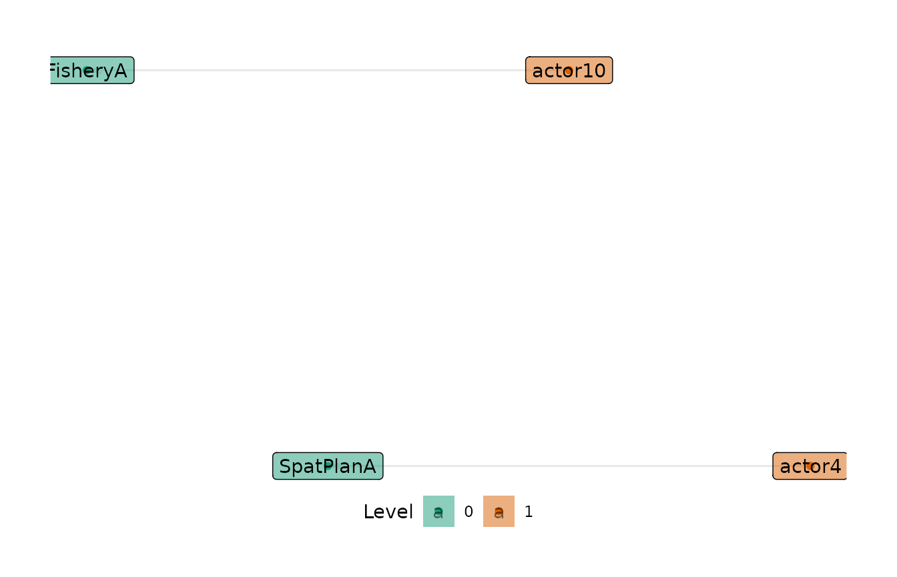
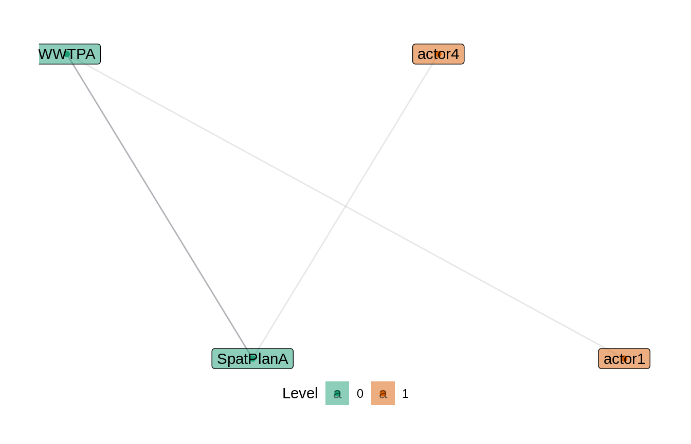
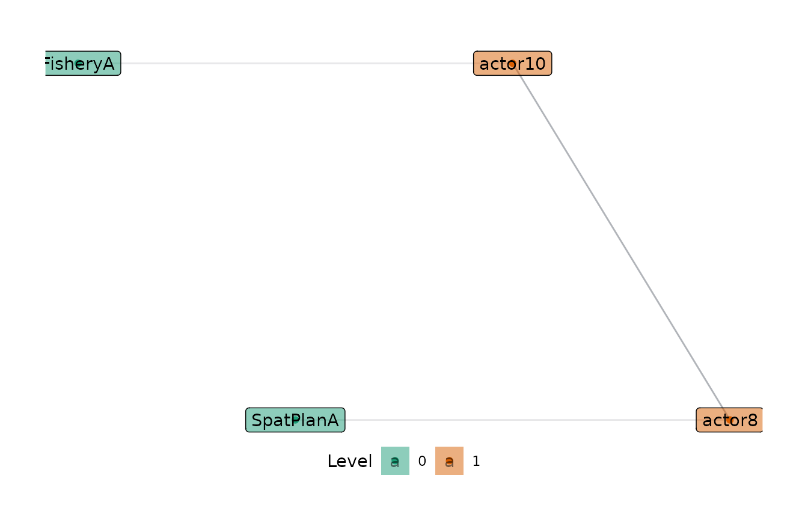
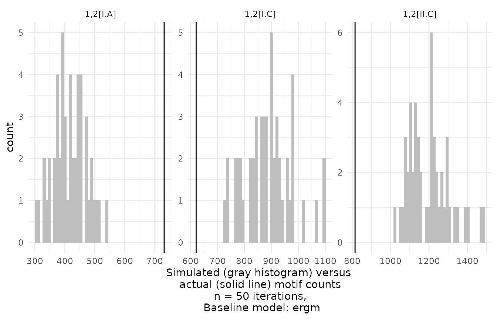
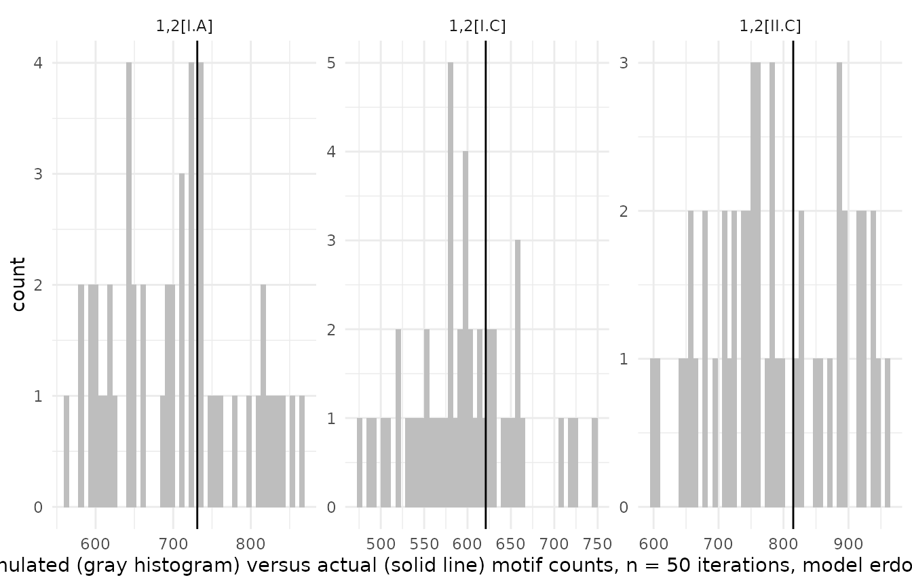

This vignette describes the models used for random baselines in motifr. Baseline models have to be specified when requesting random networks (e.g., compare_to_baseline()), and when computing properties of motif distributions analytically (e.g, motifs_distribution()).
Baseline models
Currently, three baseline models are implemented. The parameters of the models are extracted from a given (empirical) network.
-
Fixed Densities Model (
fixed_densities) Given two levels A and B, in this model it is assumed that the number of edges between level A and level B is fixed for all A-B ties. The specific number of edges is drawn randomly from the set of all possible edges. -
Erdős-Rényi Model (
erdos_renyi) In this model edges between the various levels are drawn independently at random with respect to a fixed probability depending on the levels. The (refined) Erdős-Rényi model accounts for the various levels by allowing to specify different probabilities ties occurring within different levels. -
Actor’s Choice Model (
actors_choice) In this model all edges but the edges on one specific level are fixed. This is motivated by theoretical considerations about the application of multi-level network models in situations where one level is composed of actors, which are more readily able to change their connections, and other levels considered more stable, eg. specific instances of ecological networks. The edges on this non-fixed “actor level” are chosen independently with fixed probability as in Erdős-Rényi. -
Exponential Random Graph Model (
ergm) Sophisticated model which accounts for various network parameters. Please consult the documentation of theergmfor details.
For further details see the documentation of the Python sma package.
Motifs in networks simulated based on a baseline model
Motifs in random networks can be counted using simulate_baseline(). The supported models are erdos_renyi, fixed_densities, actors_choice and ergm. The function compare_to_baseline() can be used for plotting the results:
simulate_baseline(ml_net, motifs = list("1,2[I.C]", "1,2[II.C]"), n = 5, directed = FALSE) #> 1,2[I.C] 1,2[II.C] #> 1 184 25 #> 2 170 23 #> 3 177 10 #> 4 201 23 #> 5 142 18
Motif distributions without simulation
Expectations and variances in erdos_renyi and actors_choice can be computed analytically, i.e. without simulating hundreds of random networks. Until now variances can only be computed for 1,2-motifs.
motifs_distribution(ml_net, motifs = list("1,2[I.C]", "2,2[II.D]"), directed = FALSE) #> motif expectation variance #> 1,2[I.C] 1,2[I.C] 169.14423 949.7743 #> 2,2[II.D] 2,2[II.D] 68.83919 968.5823
Difference between Erdős-Rényi and Fixed Densities
There is a crucial difference between the Erdős-Rényi model and Fixed Densities model. In the former, the expected number of edges on each level equals the number of edges in the empirical network, while in the latter the exact number in each random network equals this number. This difference becomes obvious when counting edges in random networks. For a network with two levels A and B 1,1[1] is the motif consisting of one node from level A and one from level B, linked by an edge.
compare_to_baseline(ml_net, motifs = list("1,1[1]"), model = "erdos_renyi", n = 50, directed = FALSE)

compare_to_baseline(ml_net, motifs = list("1,1[1]"), model = "fixed_densities", n = 50, directed = FALSE)

Level selection in Actor’s Choice Model
In the Actor’s Choice Model all levels in the network except for one are assumed to be fixed. The edges in the remaining variable (or actor’s) level are drawn randomly according to the Erdős-Rényi Model. The variable level can be selected using the level parameter, e.g. in motifs_distribution(), or determined automatically. The default level is the first level providing exactly two nodes in the motif. Note that simulate_baseline() and compare_to_baseline() do not support automatic level selection.
Let’s consider an example. Assume that the variable level is level zero. The edges in the other levels are fixed. The expected number of closed triangles with two nodes on the variable level can be computed as follows. Here level is automatically determined to be 0.
motifs_distribution(ml_net, motifs = list("2,1[II.C]"), model = "actors_choice", directed = FALSE) #> motif expectation variance #> 1 2,1[II.C] 19.08899 64.54796
More interesting is the case of motifs with signature 2,2, i.e. with two nodes on two levels. Per default, the variable level is the first level providing two nodes, so level 0 in the first line. Manually, level 1 can be selected as variable level, see second line.
motifs_distribution(ml_net, motifs = list("2,2[I.A]", "2,2[I.B]", "2,2[I.C]", "2,2[I.D]"), model = "actors_choice", directed = FALSE) #> motif expectation variance #> 2,2[I.A] 2,2[I.A] 3988.44646 20908.0827 #> 2,2[I.B] 2,2[I.B] 371.55354 20908.0827 #> 2,2[I.C] 2,2[I.C] 648.57994 614.8427 #> 2,2[I.D] 2,2[I.D] 60.42006 614.8427 motifs_distribution(ml_net, motifs = list("2,2[I.A]", "2,2[I.B]", "2,2[I.C]", "2,2[I.D]"), model = "actors_choice", level = 1, directed = FALSE) #> motif expectation variance #> 2,2[I.A] 2,2[I.A] 4506.13165 4146.282609 #> 2,2[I.B] 2,2[I.B] 100.88354 9.525781 #> 2,2[I.C] 2,2[I.C] 451.86835 4146.282609 #> 2,2[I.D] 2,2[I.D] 10.11646 9.525781
Note that in the first line, when level 0 is the variable level, motifs I.A and I.B have the same variance. This is because they only differ in the dyad on the variable level. Similarly, in the second line motifs I.A and I.C have the same variance as they only differ in the dyad on the variable level.
show_motif("2,2[I.A]", net = ml_net, label = TRUE, directed = FALSE)

show_motif("2,2[I.B]", net = ml_net, label = TRUE, directed = FALSE)

show_motif("2,2[I.C]", net = ml_net, label = TRUE, directed = FALSE)

Exponential Random Graph Models (ERGM)
ERGMs are a powerful tool when working with random networks. The R library ergm provides various so called terms for fitting models based on a multitude of network parameters. motifr can be used to analyse random networks sampled from a given ERGM.
model <- ergm(dummy_net ~ edges + triangle) #> Starting maximum pseudolikelihood estimation (MPLE): #> Evaluating the predictor and response matrix. #> Maximizing the pseudolikelihood. #> Finished MPLE. #> Starting Monte Carlo maximum likelihood estimation (MCMLE): #> Iteration 1 of at most 20: #> Optimizing with step length 1. #> The log-likelihood improved by 0.02482. #> Step length converged once. Increasing MCMC sample size. #> Iteration 2 of at most 20: #> Optimizing with step length 1. #> The log-likelihood improved by 0.0009568. #> Step length converged twice. Stopping. #> Finished MCMLE. #> Evaluating log-likelihood at the estimate. Using 20 bridges: 1 2 3 4 5 6 7 8 9 10 11 12 13 14 15 16 17 18 19 20 . #> This model was fit using MCMC. To examine model diagnostics and check #> for degeneracy, use the mcmc.diagnostics() function. compare_to_baseline(dummy_net, list("1,2[I.A]", "1,2[I.C]", "1,2[II.C]"), n = 50, directed = FALSE, model = "ergm", ergm_model = model)

compare_to_baseline(dummy_net, list("1,2[I.A]", "1,2[I.C]", "1,2[II.C]"), n = 50, directed = FALSE, model = "erdos_renyi")
